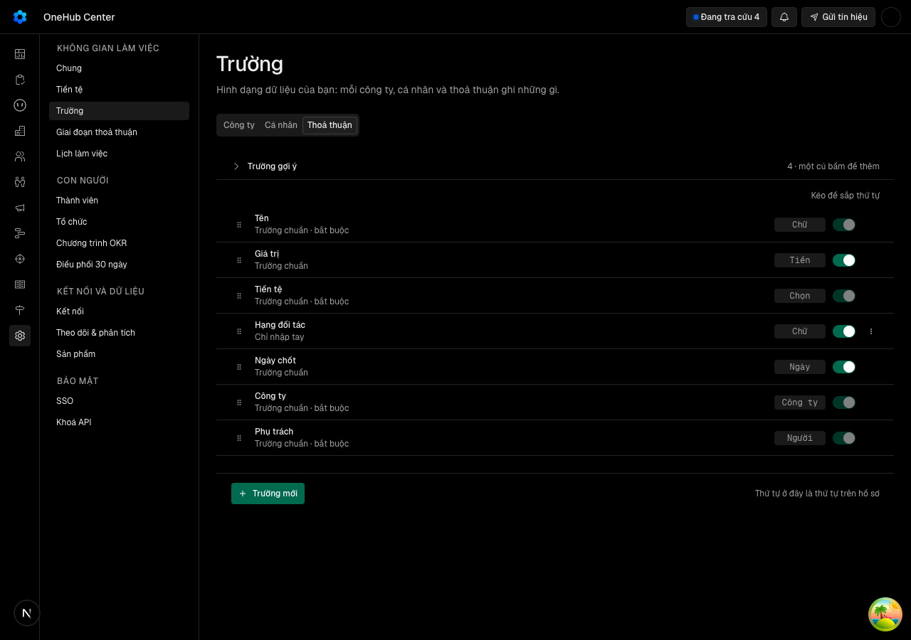

Cài đặt › Trường hứa «chỉ sắp lại thứ tự và ẩn» trường chuẩn (crm.ts:480) mà danh sách chỉ đọc, viết cứng tiếng Anh (standard-fields.ts) và thiếu trường so với phiếu; ô «Bắt buộc» có trong mô hình nhưng giao diện luôn gửi false (field-editor.tsx:200).
docs/superpowers/specs/2026-10-21-truong-chuan-o-cai-dat-design.md
| Eval | Tiêu chí | Loại | Verdict | run_id | verified_at |
|---|---|---|---|---|---|
| E1 | AC-1 | test | PASS | minted-truong-chuan-o-cai-dat-E1-r1 | 2026-10-21T15:05:06Z |
| E1b | AC-1 | script | PASS | minted-truong-chuan-o-cai-dat-E1b-r1 | 2026-10-21T15:05:06Z |
| E2 | AC-2 | test | PASS | minted-truong-chuan-o-cai-dat-E2-r1 | 2026-10-21T15:05:06Z |
| E2b | AC-2 | test | PASS | minted-truong-chuan-o-cai-dat-E2b-r1 | 2026-10-21T15:05:06Z |
| E2c | AC-2 | test | PASS | minted-truong-chuan-o-cai-dat-E2c-r1 | 2026-10-21T15:05:06Z |
| E3 | AC-3 | test | PASS | minted-truong-chuan-o-cai-dat-E3-r1 | 2026-10-21T15:05:06Z |
| E3b | AC-3 | test | PASS | minted-truong-chuan-o-cai-dat-E3b-r1 | 2026-10-21T15:05:06Z |
| E4 | AC-4 | test | PASS | minted-truong-chuan-o-cai-dat-E4-r1 | 2026-10-21T15:05:06Z |
| E4b | AC-4 | test | PASS | minted-truong-chuan-o-cai-dat-E4b-r1 | 2026-10-21T15:05:06Z |
| E5 | AC-5 | test | PASS | minted-truong-chuan-o-cai-dat-E5-r1 | 2026-10-21T15:05:06Z |
| E5b | AC-5 | test | PASS | minted-truong-chuan-o-cai-dat-E5b-r1 | 2026-10-21T15:05:06Z |
| E6 | AC-6 | test | PASS | minted-truong-chuan-o-cai-dat-E6-r1 | 2026-10-21T15:05:06Z |
| E6b | AC-6 | test | PASS | minted-truong-chuan-o-cai-dat-E6b-r1 | 2026-10-21T15:05:06Z |
| E7 | AC-7 | test | PASS | minted-truong-chuan-o-cai-dat-E7-r1 | 2026-10-21T15:05:06Z |
| E7b | AC-7 | test | PASS | minted-truong-chuan-o-cai-dat-E7b-r1 | 2026-10-21T15:05:06Z |
| E7c | AC-7 | script | PASS | minted-truong-chuan-o-cai-dat-E7c-r1 | 2026-10-21T15:05:06Z |
| E8 | AC-8 | test | PASS | minted-truong-chuan-o-cai-dat-E8-r1 | 2026-10-21T15:05:06Z |
| E8b | AC-8 | test | PASS | minted-truong-chuan-o-cai-dat-E8b-r1 | 2026-10-21T15:05:06Z |
| E9 | AC-9 | ui-check | PASS | minted-truong-chuan-o-cai-dat-E9-r1 | 2026-10-21T15:05:06Z |
AC-1: Given quản trị mở Cài đặt › Trường, When xem từng thẻ Thoả thuận, Công ty, Liên hệ, Then:
Ran 2 tests across 1 file. [2.20s] __EXIT=0
AC-1: Given quản trị mở Cài đặt › Trường, When xem từng thẻ Thoả thuận, Công ty, Liên hệ, Then:
tcc quet: dat __EXIT=0
AC-2: (cross-layer) Given loại Thoả thuận có trường tự tạo «Hạng đối tác», When quản trị kéo nó lên trên «Ngày chốt»
Ran 1 test across 1 file. [1.82s] __EXIT=0
AC-2: (cross-layer) Given loại Thoả thuận có trường tự tạo «Hạng đối tác», When quản trị kéo nó lên trên «Ngày chốt»
test-run: dropped crm_mvi8vbrmsmtp_test __EXIT=0
AC-2: (cross-layer) Given loại Thoả thuận có trường tự tạo «Hạng đối tác», When quản trị kéo nó lên trên «Ngày chốt»
Ran 1 test across 1 file. [1467.00ms] __EXIT=0
AC-3: (cross-layer) Given trường chuẩn «Thành phố» của Công ty, When quản trị tắt «Hiện trên phiếu» rồi bật lại, Then:
Ran 3 tests across 1 file. [1.78s] __EXIT=0
AC-3: (cross-layer) Given trường chuẩn «Thành phố» của Công ty, When quản trị tắt «Hiện trên phiếu» rồi bật lại, Then:
test-run: dropped crm_mvi8vazsz6m0_test __EXIT=0
AC-4: (cross-layer) Given một trường chuẩn bắt buộc theo danh mục (Tên của Thoả thuận, Công ty; Tên của Liên hệ; Tiền tệ, Công ty,
Ran 1 test across 1 file. [1.64s] __EXIT=0
AC-4: (cross-layer) Given một trường chuẩn bắt buộc theo danh mục (Tên của Thoả thuận, Công ty; Tên của Liên hệ; Tiền tệ, Công ty,
test-run: dropped crm_mvi8vakcxj8i_test __EXIT=0
AC-5: (cross-layer) Given ô sửa một trường tự tạo kiểu Chữ, When quản trị bật «Bắt buộc» rồi Lưu, Then:
Ran 2 tests across 1 file. [2.05s] __EXIT=0
AC-5: (cross-layer) Given ô sửa một trường tự tạo kiểu Chữ, When quản trị bật «Bắt buộc» rồi Lưu, Then:
test-run: dropped crm_mvi8vaujq8qd_test __EXIT=0
AC-6: (cross-layer) Given một trường tự tạo, When quản trị bật «Bắt buộc», Then:
Ran 1 test across 1 file. [1.56s] __EXIT=0
AC-6: (cross-layer) Given một trường tự tạo, When quản trị bật «Bắt buộc», Then:
test-run: dropped crm_mvi8vb2okq6i_test __EXIT=0
AC-7: (cross-layer) Given một loại bản ghi chưa ai sắp lần nào, When phiếu và Cài đặt đọc bố trí, Then:
test-run: dropped crm_mvi8vb3pnb6d_test __EXIT=0
AC-7: (cross-layer) Given một loại bản ghi chưa ai sắp lần nào, When phiếu và Cài đặt đọc bố trí, Then:
Ran 1 test across 1 file. [1085.00ms] __EXIT=0
AC-7: (cross-layer) Given một loại bản ghi chưa ai sắp lần nào, When phiếu và Cài đặt đọc bố trí, Then:
tcc migration: dat 20261021054942_truong_chuan_bo_tri __EXIT=0
AC-8: (cross-layer) Given người không phải quản trị mở Cài đặt › Trường, When xem danh sách, Then:
test-run: dropped crm_mvi8viuvw3x3_test __EXIT=0
AC-8: (cross-layer) Given người không phải quản trị mở Cài đặt › Trường, When xem danh sách, Then:
Ran 1 test across 1 file. [1014.00ms] __EXIT=0
AC-9: Given bố trí đã sắp lại và ẩn một trường, When người mở Cài đặt › Trường và phiếu cùng loại ở khổ 1280

| Khối | Tác tử | Token đầu ra |
|---|---|---|
| S4 round 1 | 33 | 55.541 |
1 lượt chấm · tổng 55.541 token
chưa gộp vào onehub (nhánh production kho khai)